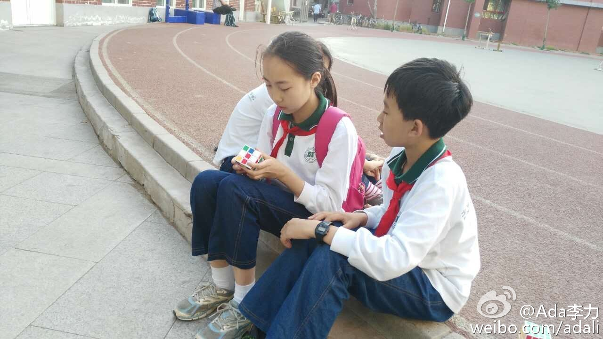

想起了这个事情。老革命遇到新问题，公司人事一直想推行上线班打卡制度，而我一直反对，现在觉得人事的建议或许有道理。@Ada李力:当当网CTO熊长青在@CTO俱乐部 的一次交流会上说管理。他用之前管研发人员的方式管理库房人员就完全不适合，后来就改成简单粗暴的方法，库房门口站着彪形大汉，进出人员搜身，算解决了库房丢东西的难题。- 方法是否合适，真的是要看对象是谁。
回复@onavon:不喜欢这篇文章的原因：通篇意识是认为女性是需要包容的那一方，弱者才总需要别人包容。女性争取平等路还很长，但还总是无意识地矮化自己。 //@Ada李力:这文章里描述的女性都够作的。文中一直透露的这种意思：我情绪化，我不讲理，所以你就得包容我？！！！你得会说话哄着我！---:抱歉，此微博已被作者删除。查看帮助： 网页链接
TT妈妈拍了照片，说“现在男孩女孩不敢轻易在一起玩啦，旁边有时同学会起哄”，所以这张照片难得。 我回家问#姣姣# 是不是这样，她回：“说得太对了！”。我问：“都有谁起哄呢？”。姣姣：“Anybody", 明俊说：“你不能因为别人笑话就不跟男生玩了，爸爸妈妈鼓励你和男生交往”。姣姣斜我俩两眼：“交往？”。 我差点要接上一句说：“谈个早恋也没啥”。还是忍住了，哎。
我对#姣姣# 说：“进入青春期的孩子就是麻烦，你之前多甜心，多体贴，多可爱啊，现在整个一小刺猬，说你什么都炸，我在家都不敢惹你”。姣姣嗲嗲地：“我不是小刺猬～～～”。我正宽心，闺女又回复以前的样子了，她接着说：“我是大刺猬！！！”